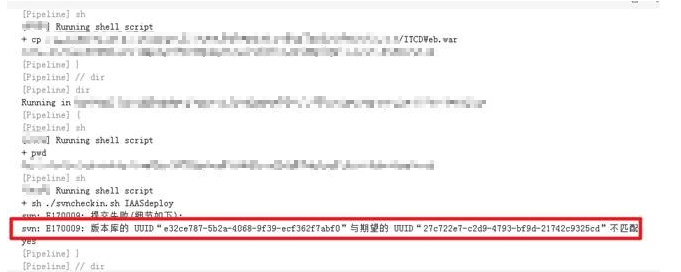

今天被前一个项目组埋的雷炸惨了!
在 2019-10-17 Thursday 发布于 DevOps 分类 • 1 min read
前言¶
今天被前一个项目组埋的雷炸惨了! 事情是这样的:
我今年接手了 K8S 平台的管理, 这套 K8S 平台是前一个项目组(某国际性开源商业公司...)实施的. 包括了一整套完整的 CI/CD 流水线.
这套流水线中有用到SVN , 用作一个简易的制品库, 用来存放软件包, 后续的流水线会从SVN中拉取软件包并打成镜像更新.
但是今天! 在使用这个流水线的一个系统开发向我反馈流水线运行报错了, 报错如下:

然后我登录到这个SVN仓库看了一眼, 惊出了一身冷汗!  -- SVN仓库空了！数据全没了！
-- SVN仓库空了！数据全没了！
这意味着：运行近2年, 所有使用这个流水线的业务系统历史发布包, 配置, 以及基础镜像相关的代码, 脚本全没了!
分析处理经过¶
如果真是数据全丢的话问题太严重了! 我整个人真的是过了好久我才从这个打击中恢复过来. 第一个想法就是赶紧想办法恢复数据.
第一种可能¶
登录了SVN 服务器看了下, 10多个小时前重启过. 第一个想到的可能性就是:
- 共享存储没挂载?
- 主机迁移过?
赶紧去找主机和存储组帮忙查了下. 结果如下:
- 该主机没有共享存储
- 主机是克隆后的主机, 但是克隆前后数据没有发生过丢失
第二种可能¶
排除第一种可能性. 接下来就仔细先检查了下 SVN 服务器运行情况, 是服务自启动的, 启动后进程如下:
/usr/bin/svnserve --daemon --pid-file=/run/svnserve/svnserve.pid -r /var/svn/
看了下/var/svn, 空空如也, 所有历史数据都没有.
这时注意到/ 目录磁盘有一定的使用量, 所以就想到了第二种可能:
- 是不是SVN仓库位置不是默认的
/var/svn啊?
所以使用du -sh逐一查看各个目录, 还真有收获, 发现root和 /project 目录较大, 进一步查看排除/root
目录.
再通过history 查看历史命令, 发现 K8S 上一期项目组确实将 SVN 仓库放到了/project 目录下.
那这次自启动后为啥目录变了? 然后用systemctl查看 svnserve的参数, 如下:
systemctl cat svnserve.service
# /usr/lib/systemd/system/svnserve.service
[Unit]
Description=Subversion protocol daemon
After=syslog.target network.target
[Service]
Type=forking
EnvironmentFile=/etc/sysconfig/svnserve
ExecStart=/usr/bin/svnserve --daemon --pid-file=/run/svnserve/svnserve.pid $OPTIONS
[Install]
WantedBy=multi-user.target
这个svnserve.service 服务会调用/etc/sysconfig/svnserve , 查看该文件配置:
cat /etc/sysconfig/svnserve
# 输出如下:
OPTIONS="-r /var/svn/"
就是这个地雷 !!! --
!!! --
上个项目组, 安装了SVN(同时设置了自启动), 改了仓库位置, 却没有将修改后的仓库位置加入到启动参数中!!! 导致主机重启后自动带起来的 SVN 仓库不对! 
修复¶
发现问题后, 修复起来就很简单了, 修改/etc/sysconfig/svnserve:
OPTIONS="-r /project/svn/"
然后重启 svnserve就好了.
systemctl restart svnserve.service
总结¶
上个项目组的七宗罪¶
- 不敬畏客户的业务和环境! 没有站在客户角度去考虑周全.
- 安装配置使用 SVN时, 过于随意和草率, 从没有考虑过主机重启的情况!
- SVN 安装过程, 未生成详细的过程文档和配置文档.
- SVN 安装后, 未生成详细的运维文档.
- 交接期, 只交接了SVN 地址, SVN账号密码. 未进一步交接: 主机账号密码, SVN配置信息.
- 项目经理, 对项目细节缺乏把控.
- 由此展开, 可能还会埋有更多这样我尚不清楚, 但是与整个K8S 系统紧密相关的雷. 它们可能散落在K8S 系统的各个角落甚至K8S 之外, 存在较大风险.
冷汗不止¶
事后我仍然冷汗不止, 因为刚出现问题的第一时间, 我首先想到的是解决图片上的SVN 报错. 而解决的办法, 就是将错就错, 直接初始化一下, 然后用这个空的SVN 仓库... 当然, 如果这样, 那这个雷, 相当于是我发现它炸了一个了, 我把剩下的熄灭后, 又埋下去了! 那下一次爆炸, 威力就不仅止于此了.